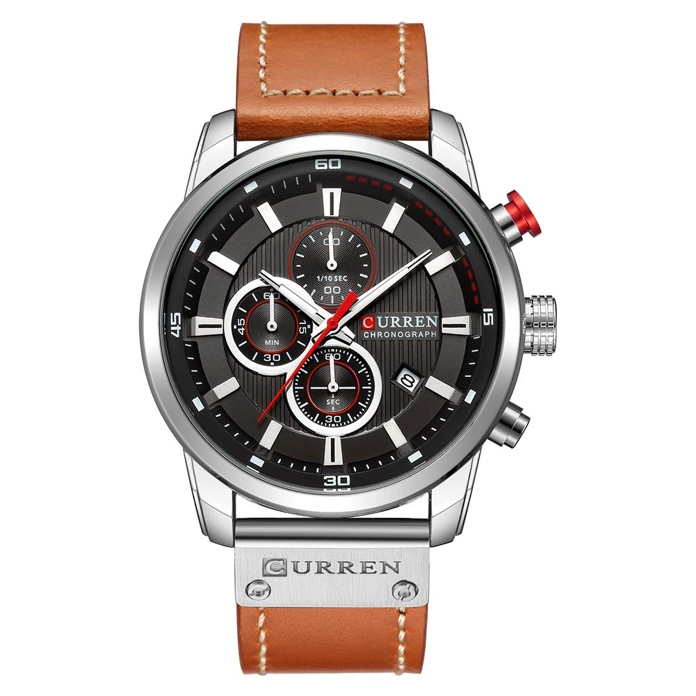

Q1.時計を見るのは楽しい
Q2.友人が病気で休んだら忙しくてもお見舞いする
Q3.結局のところ時計はファッションだ
Q4.時計はカッコいいものが良い
Q5.時計をつけるなら軽い物より重たくがっしりした物がいい
この時計はインビクタという古典的な様式で有名なスイスブランドの時計で、通常は1万円以内に買えたりしない時計が多いいのですが、さすがはアマゾンですね。性能はインビクタ印なので安いところはありません。具体的に説明しますと、ケースはステンレス製、バンドはライフルバンドを使い、風防は純正のミネラルクリスタルで保護されて高い耐久性があり、100メートルの耐水性まで備えています。素材から既に高級時計の多くに使われる物ばかりです。これが、クォーツ時計ではなく自動巻きの機械式時計であったのならば、数万単位は軽くいくでしょう。
「コスパ時計じゃない」かって？
安い今のうちにコスパ良く買ってくださいってことです。

ビジネスの場では常に誠実さと、落ち着いた物腰が好まれます。この時計は落ち着いたブラウン色の革ベルトを採用しており、スーツにしっかりと馴染む腕時計となっています。クオーツ式の高品質な日本製ムーブメントを搭載しており、デザインだけでなく品質も優れているのが魅力。兎に角この時計は、質感、重量、立体的なデザインに力を入れており、低価格だとは思えない高級時計顔負けの作りになっています。まさにコスパ時計。男性だけでなく女性にもお使いいただけ、ビジネスの場において、この時計の話題一つで会話の助けになるかもしれません。
まず、この時計の良い点を挙げていきます。まずこの時計のケースはチタン合金製かつ風防はクリスタルで頑丈。ベルトは柔軟性と程よい硬さを併せ持つ革素材を採用しているので、その柔軟さが肌を優しく包み込んでくれて長時間つけても肌に負担をかけない。簡易カレンダーが付いていて、アナログ表示で分かりやすく日時の確認が簡単にできる。日常防水機能もちゃんとついている。値段も鑑みても、バランスのいいコストパフォーマンスではないでしょうか。全体的な配色は黒で統一されていて落ち着きがあり、男性の大学生くらいのファッションにあいそうな雰囲気です。しかし、ちょっと目をつむりたい点をあげるとするならば、秒速などを図る小さい針などが全部動かない所くらいでしょう。あなたがコスパの良さとファッションに主眼を置くのならおすすめします。
ゴツイ！！。デザインはゴツさと頑丈さ、男受けするカッコよさを表しています。実際に頑丈なのは本当で、高強度ガラスのケースとレザーバンドを利用し、耐久性、耐ひっかきを向上させています。一応防水とありますが、バンドが革製なので、水には余りつけない方が良さそうです。またこの時計は見た目的に多機能に見えますが、２つの機能に限られています。３つのサブダイヤル、カレンダー機能などです。画像を見ていただけるとお分かりになりますが、サイズが大きいです。実際着けた方々は画像のサイズよりもっとでかいという意見が多くありました。しかし、多少批判的になってしまいましたが、この時計が醸しだすゴツさと高級感のあるクロノグラフ調は見ただけでわかる通り本物であると言えます。あなたが安く、重たくゴツく、頑丈なものが欲しいならば、挑戦してみてはいかがでしょうか。